직원이 영수증을 첨부해 신청하고 상사가 승인하며 회계 담당자가 지급을 기록합니다. 관련 없는 동료에게는 문서가 보이지 않습니다. 회계를 나중에 켜도 전표가 만들어지고, 취소하면 전표는 지워지되 원장에는 일어난 일이 모두 남습니다.
무엇을 · 왜#
경비 문서는 신청한 본인, 승인자, 대신 올린 사람, 회계 담당자, 관리자만 볼 수 있습니다. 동료나 경비 업무와 관련 없는 인사 담당자에게는 보이지 않습니다.
| 원장에 남는 것 | 원장 밖에 두는 것 |
|---|---|
| 금액(장부를 다시 만드는 데 필요합니다. 같은 사람들만 읽습니다) | 적요, 메모, 영수증 없는 사유, 반려·취소 사유 |
| 파일 지문과 크기 | 파일과 파일 이름 |
먼저 알아 둘 것
- 가온가전은 가상 회사이고, 사람, 금액, 영수증은 모두 가상입니다. 영수증 그림은 시연용으로 만든 문서입니다. 화면은 로컬 Supabase에서 찍었습니다.
- 녹화 전에 인사 모듈, 구성원 박영업, 오동료, 김팀장, 정회계, 한인사, 부서
영업, 직원 3명을 명령으로 넣었습니다. 추이를 보여 주려고 지난 석 달 경비 3건(10,000, 20,000, 40,000)도 명령으로 넣었습니다. - 앱은 돈을 옮기지 않습니다. 회계 화면은 전문가 검수 전입니다.
따라 하기#
- 경비 켜기. 관리자로 설정 → 모듈에서 경비의 켜기를 누릅니다. 인사가 먼저 켜져 있어야 합니다. 켜기 전의 경비는 원장에 없다고 알려 줍니다.
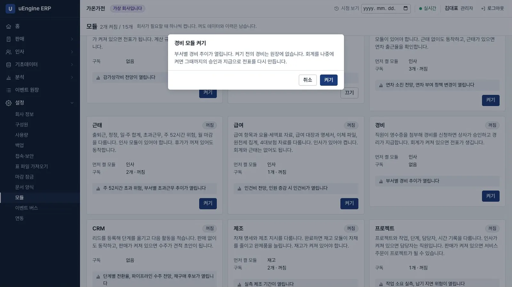
경비 켜기 - 쓰기. 박영업으로 경비 → 경비 → 새로 만들기에서 적요
거래처 미팅 택시, 금액15000, 지출일을 넣고 저장합니다. 번호EX00001이 붙습니다.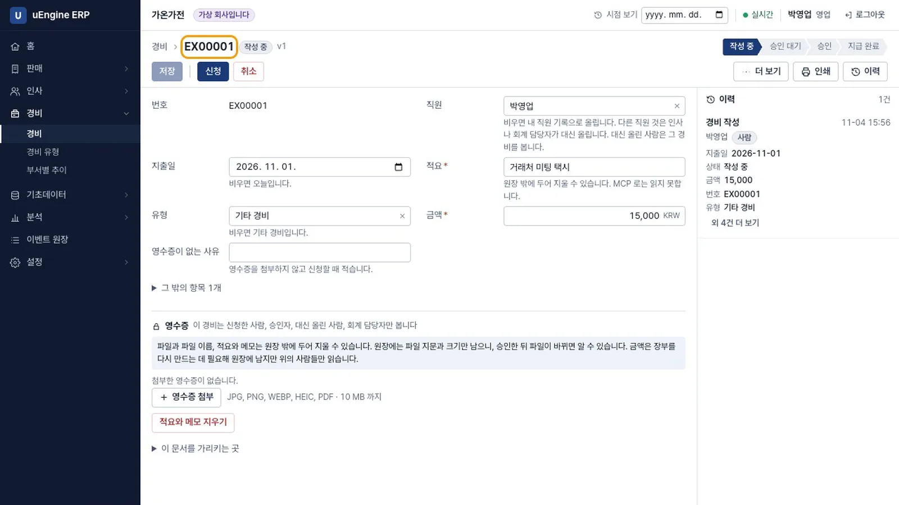
경비 작성 - 영수증 없이 신청. 신청을 누르면
영수증을 첨부하거나 영수증이 없는 사유를 적어 주세요라는 안내가 나오고 신청되지 않습니다.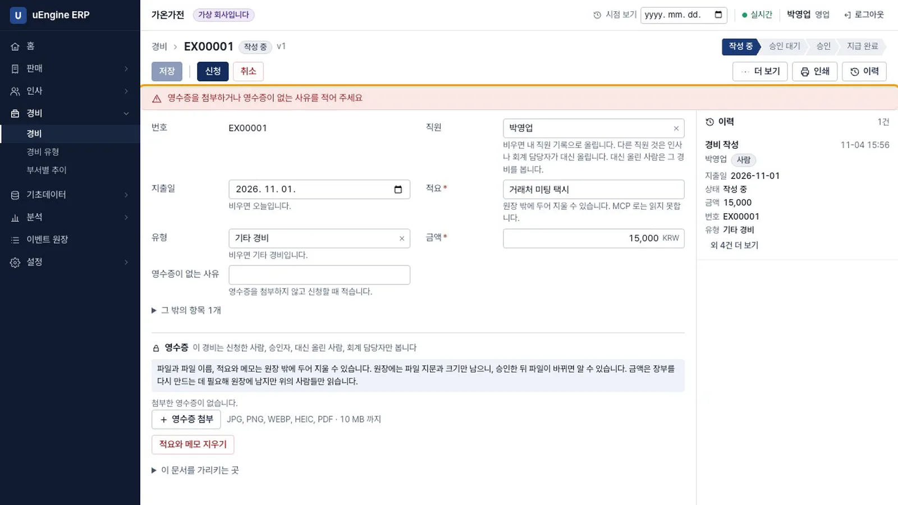
영수증 없음 - 영수증 첨부. 영수증 첨부로 파일을 올립니다. 같은 영수증이 이미 있으면 첨부할 수 없습니다.
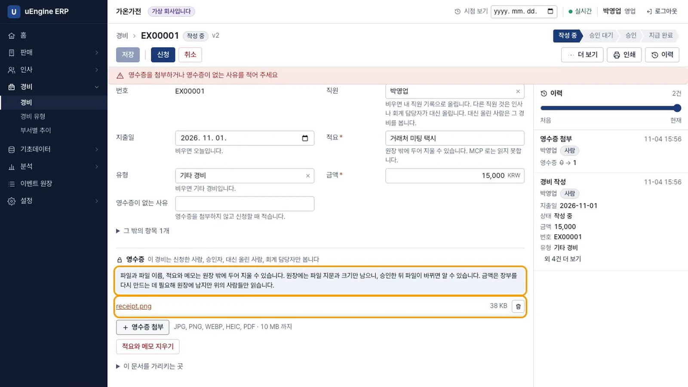
영수증 첨부 - 신청. 신청을 누르면 승인 대기 상태가 됩니다. 본인 화면에는 승인 단추가 없습니다. 녹화에서 원장을 검색해 적요와 파일 이름이 없는 것을 확인했습니다.
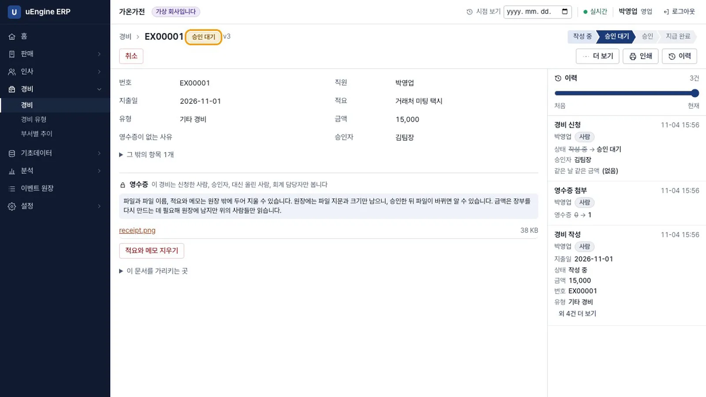
승인 대기 - 다른 직원. 오동료로 로그인하면 경비 목록이 비어 있습니다. 주소를 직접 입력해도
이 문서를 찾을 수 없습니다가 나옵니다.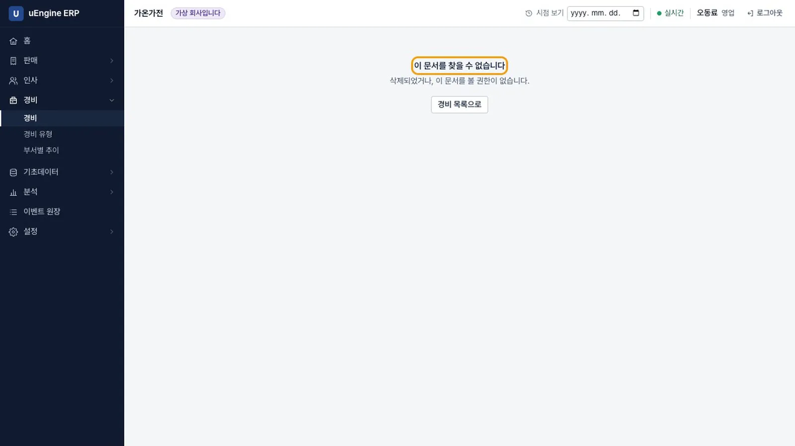
다른 직원 - 반려. 김팀장으로 승인 대기 목록에서 경비를 엽니다. 파일 이름을 누르면 영수증이 새 창에 열립니다. 합계는 12,500원입니다. 반려를 누르고 사유
금액이 영수증과 다릅니다를 적습니다.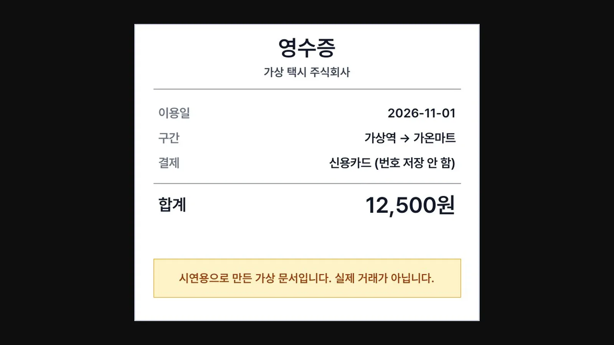
영수증 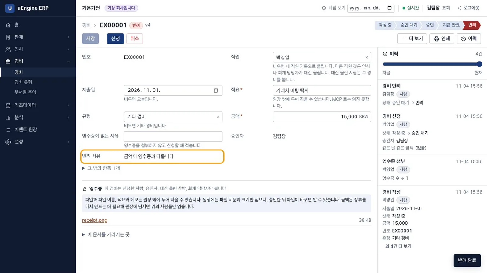
반려 - 다시 신청. 박영업으로 경비를 열면 반려 사유가 보입니다. 금액을
12500으로 고치고 신청을 누릅니다.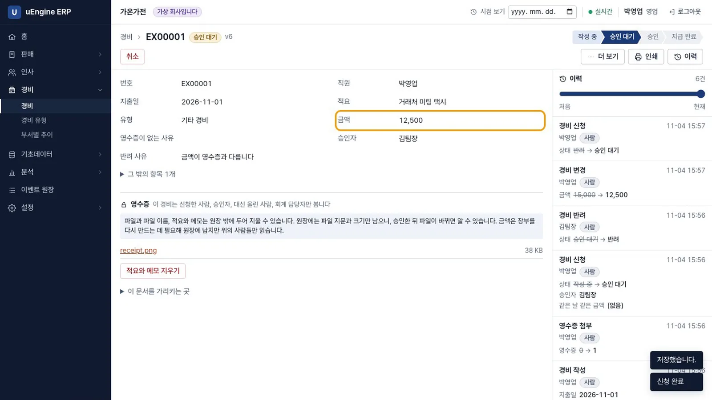
다시 신청 - 승인. 김팀장으로 승인을 누릅니다. 회계일을 비우면 지출일로 정해집니다.
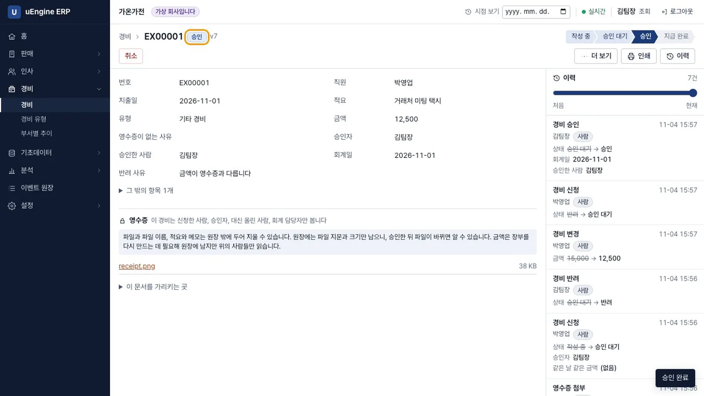
승인 - 지급. 정회계로 지급 완료를 누릅니다.
앱은 돈을 옮기지 않습니다라고 적혀 있습니다. 사람이 이체한 사실을 남기는 단추입니다.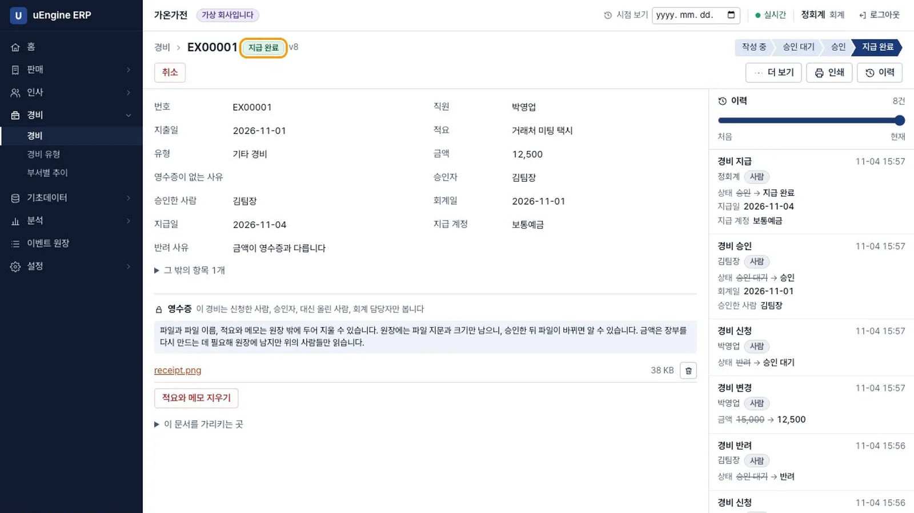
지급 완료 - 회계 켜기. 관리자로 회계를 켜고 회계 → 전표를 엽니다. 나중에 켜도 지난 승인과 지급으로 자동 전표 2건이 생깁니다.
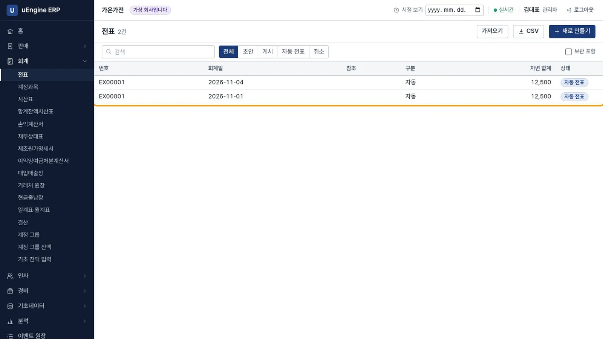
전표 - 시산표. 회계 → 시산표의 차변과 대변이 25,000으로 같습니다. 잡비 12,500, 보통예금 -12,500이고 미지급금은 차변과 대변이 12,500으로 같아 잔액이 없습니다.
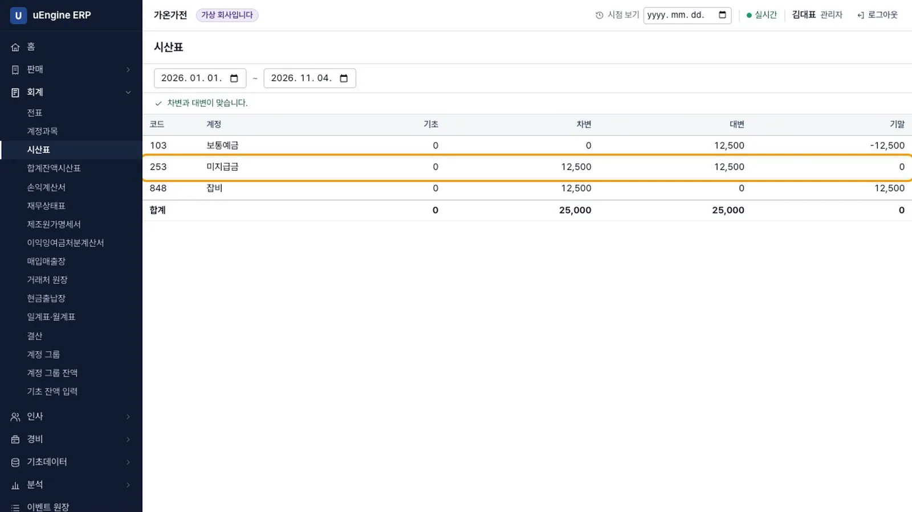
시산표 - 취소. 정회계로 경비를 열어 취소를 누르고 사유를 적습니다. 그 경비의 전표는 지워지고, 원장에는 승인, 지급, 취소가 모두 남습니다. 사유는 원장 밖에 있어 경비를 볼 수 있는 사람만 봅니다.
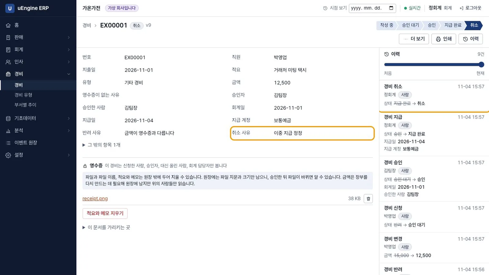
취소 - 추이. 김팀장으로 경비 → 부서별 추이를 엽니다. 자기가 볼 수 있는 경비만 합쳐 70,000이고,
내가 볼 수 있는 경비만 셉니다. 회사 전체 금액이 아닙니다.라고 적혀 있습니다. 취소한 경비는 빠집니다. 전체 경비는 회계 담당자가 봅니다. 오동료에게는 0으로 나옵니다.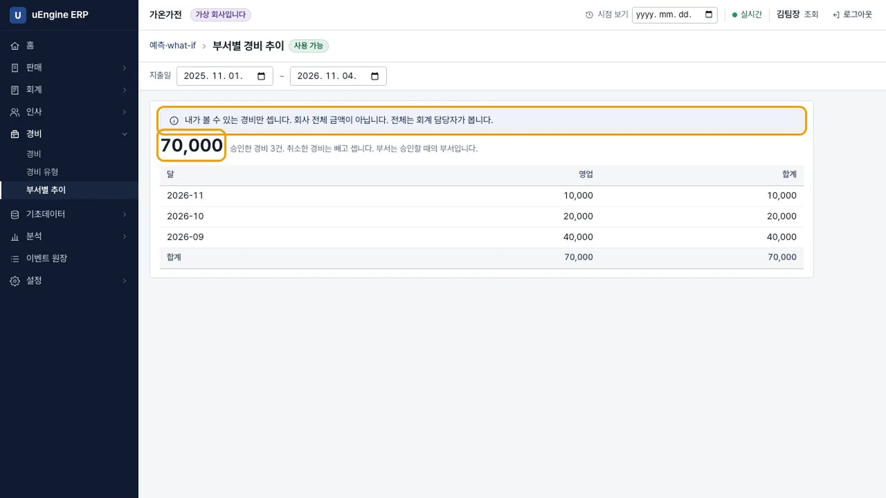
추이
확인 문제#
금액은 왜 원장에 남나요?
회계를 나중에 켰을 때 장부를 다시 만드는 데 필요하기 때문입니다. 금액도 경비를 볼 수 있는 사람만 읽습니다. 적요와 사유는 원장 밖에 두어 지울 수 있습니다.
동료가 주소를 알아내면 내 경비를 볼 수 있나요?
볼 수 없습니다. 화면에는 문서를 찾을 수 없다는 안내가 나옵니다. 그 사람의 토큰으로 직접 요청해도 문서를 볼 수 없습니다. 저장소의 영수증 파일도 마찬가지입니다.
지급한 경비를 취소하면 기록이 사라지나요?
그 경비의 열린 전표는 지워지지만 원장의 승인, 지급, 취소는 그대로 남습니다.